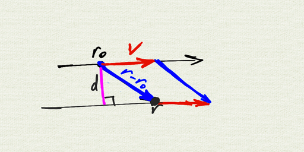

Geometric Algebra Notes 1 (Wedge Product)
MultiV 2021-22 / Dr. Kessner
First we’re going to think about the unit circle in \(\mathbb{R}^2\), and change our notation as well.
We’re going to call our unit vectors \(e_1 = \mathbf{i} = \begin{pmatrix} 1 \\ 0 \end{pmatrix}\) and \(e_2 = \mathbf{j} = \begin{pmatrix} 0 \\ 1 \end{pmatrix}\).
Let \(u = \begin{pmatrix} \cos \theta \\ \sin \theta \end{pmatrix}\) be a vector on the unit circle.
Observe that the projection of \(u\) on the x-axis is given by \(\cos \theta\), and the area of the parallelogram determined by \(e_1\) and \(u\) is \(\sin \theta\).
We can graph the area of the parallelogram as \(u\) moves around the unit circle. Notice that for \(\theta \in [\pi, 2\pi]\), the area is negative.

We have seen previously that \(u = \begin{pmatrix} a \\ b \end{pmatrix}\) and \(v = \begin{pmatrix} c \\ d \end{pmatrix}\), the area of the parallelogram is given by the determinant \(\begin{vmatrix} a & c \\ b & d \\ \end{vmatrix} = ad - bc\).

We define the wedge product \(u \wedge v\) to be the directed (signed) area of the parallelogram determined by the two vectors, but with “units” (like \(\text{meters}^2\)). We call this directed area a bivector.
We define \(e1 \wedge e2\) to be the “unit bivector”. It represents the directed area of the square determined by \(e_1\) and \(e_2\). A general bivector will be a scalar multiple of \(e_1 \wedge e_2\). However, the actual shape of of the bivector is not specified: we can think of it as a square, or reshape it to a parallelogram, or an amorphous shape in the plane.

From the definition of the wedge product, we observe that:
\(e_1 \wedge e_1 = 0 = e_2 \wedge e_2\)
\(e_2 \wedge e_1 = - e_1 \wedge e_2\).
The distributive property is not so obvious:
\(w \wedge (u+v) = w\wedge u + w\wedge v\)

Once we believe the distributive property, we can do FOIL.
Let \(u = \begin{pmatrix} a \\ b \end{pmatrix} = a e_1 + b e_2\)
and \(v = \begin{pmatrix} c \\ d \end{pmatrix} = c e_1 + d e_2\).
Then
\(\begin{aligned} u \wedge v &= (a e_1 + b e_2) \wedge (c e_1 + d e_2) \\ &= (a e_1 \wedge c e_1) + (a e_1 \wedge d e_2) + (b e_2 \wedge c e_1) + (b e_2 \wedge d e_2) \\ &= ac (e_1\wedge e_1) + + ad (e_1 \wedge e_2) + bc (e_2 \wedge e_1) + bd (e_2 \wedge e_2) \\ &= (ad-bc) (e_1 \wedge e_2) \end{aligned}\)
Notice that the determinant \(ad-bc\) emerges as a consequence of the elementary properties of the wedge product.
Or we can use this as a shortcut for calculating the wedge product between two vectors:
\(\begin{aligned} u \wedge v &= \begin{pmatrix} a \\ b \end{pmatrix} \wedge \begin{pmatrix} c \\ d \end{pmatrix} \\ &= \begin{vmatrix} a & c \\ b & d \\ \end{vmatrix} (e_1 \wedge e_2) \\ &= (ad-bc) (e_1 \wedge e_2) \end{aligned}\)
Here’s an example:
\(\begin{aligned} \begin{pmatrix} 3 \\ 0 \end{pmatrix} \wedge \begin{pmatrix} 0 \\ 2 \end{pmatrix} &= \begin{vmatrix} 3 & 0 \\ 0 & 2 \\ \end{vmatrix} (e_1 \wedge e_2) \\ &= 6 (e_1 \wedge e_2) \end{aligned}\)

Here’s an application to a problem we have solved with the dot product and projection / rejection before: calculate the distance from a point to a line.
Suppose you have a line given by a point \(r_0\) and a vector \(v\). Suppose also that you have a point \(r\) in the plane. To calculuate the distance from the point to the line, you can find the area of the parallelogram between the vectors \(r-r_0\) and \(v\), and divide by the base (the length of \(v\)). The height of the parallelogram is the perpendicular distance from the point to the line:
\(d = \dfrac{|(r-r_0)\wedge v|}{|v|}\)

Note that you could do this equivalently with the cross product, but the geometry is not as obvious.